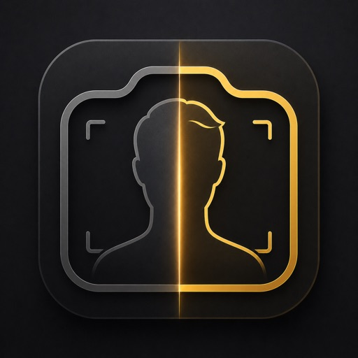

App Store Companion Page

Body Progress Photo Tracker
Keep private body check-ins on your iPhone, line up the same pose over time, and compare progress without sending photos to a cloud workflow.
- Private body check-ins
- Same pose alignment
- Before and after compare
- Face ID lock